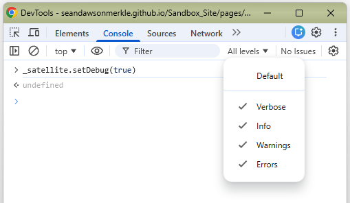

TO DO: Add a new Launch library.
TO DO: Add the Adobe Web SDK extension in Launch with the basic, default settings using 'Merkle Platform Group (dev)'.
TO DO: Add datastream for Web SDK.
TO DO: Add XDM data element
TO DO: Add Page View event
TO DO: Add Adobe Analytics data object - Adobe Doc
TO DO: Add Target data object - Adobe Doc
TO DO: Adobe Experience Platform Debugger
NOTE: enter _satellite.setDebug(true) in the browser console to display Launch debug information.
- Also check 'Verbose' to set All levels in the Log Levels droplist
